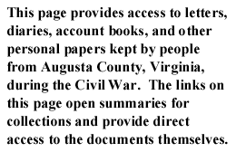

|
 |
To search select personal papers by keyword, author, or subject,
go to the letters or diaries search pages.
In a letter to Captain F. C. Roberts on November 24, 1861, Argenbright discusses a doctor appointment about whether he's fit for military service.
During the war, John B. Baldwin served as colonel of the 52nd Virginia Infantry and colonel of the Augusta Reserves. He also represented Augusta County in the Confederate Congress. In this wartime letter (1861) appearing in a newspaper, Baldwin discusses secession, revolution, and Southern unity against Northern aggression. You may also read Baldwin's postwar account of his wartime interview (1866) with Abraham Lincoln before Virginia decided on secession.
William Smith Hanger Baylor served as colonel of the 5th Virginia Infantry. His two wartime letters (1862) to his wife, Mary Baylor, record his relationship to his fellow officers and his feelings after being named a colonel. This collection includes an additional letter (1862) to Mary Baylor from Edward P. Walton, a soldier serving with her husband.
Harvey Bear was born in Virginia in 1816. He made his living as a farmer, and he continued to farm during the war. His short wartime diary (1862-1863) provides a view from the homefront of the movement of troops through Augusta County. It also describes Bear's efforts to feed Confederate soldiers by providing them with some of his harvest.
James E. Beard joined the 5th Virginia Infantry in August 1861. His wartime diary (1861-1862) recounts his life as a soldier in this regiment, including details about engagements at Manassas and Winchester and descriptions of his work as a paymaster for his company. His diary ends in 1862, when he was wounded at the Second Battle of Manassas. After the war he returned to farming and died in Augusta County in 1906.
In these two wartime letters (1863), Thomas Boatwright writes to his wife about his march into Pennsylvania, the capture of property there, and his impressions of the area.
During the war, the Brooks brothers, Charles, William, Andrew, and Moffett, served in the 4th Virginia Infantry. In their wartime letters (1861-1863) home, the Brooks brothers describe their participation in battles throughout Virginia.
Brown writes a wartime letter (1863) to his sister and mother about the goods he was able to purchase in Chambersburg, and describes the general availability, quality, and price of goods in the area. He also gives a brief account of the local population's reaction to the Confederate troops.
Camp Chase, on the outskirts of Columbus, Ohio, served as a prison during the Civil War. This collection contains three wartime letters (1862) written by Augusta soldiers while imprisoned in Camp Chase. The imprisoned soldiers recount their loneliness at Camp Chase and their daily activities.
Carneal's wartime letter (1862) speaks enthusiastically of the success of General Stuart's raid into Pennsylvania in October 1862..
Samuel Carson was a Confederate officer during the war. He was a member of Company D 5th Virginia Infantry and fought with that unit until he was captured and placed in a prisoner of war camp. Most of the letters in this collection are addressed to Annie Harris, a friend of his.
Sue Carter lived with her family in Staunton, Augusta County, Virginia, during the war. In this wartime letter (1861), Carter laments to her cousin about the pain of separation from family during the war and her faith in God to reunite them.
Benjamin F. Cochran and his brother John H. Cochran, two Augusta County natives, wrote these wartime letters (1861) to their mother. Benjamin provides the perspective of a private in the 1st Virginia Cavalry on the defense of Virginia in 1861. John also served in the Confederate military, enlisting as a private in the 46th Virginia Infantry in 1861. You may also read the prewar letters (1861) of the Cochran family regarding the secession crisis.
Henry H. Dedrick was a private in the 52nd Virginia Infantry during the war. Dedrick was a farmer in Rockingham County before the war and in Augusta County after the war. Most of the wartime letters (1861-1863) in this collection were written by Henry Dedrick to his wife, Mary E. A. "Lissa" Dedrick. He wrote about camp life including, the scarcity of rations, the prevalence of illness, and the boredom of guard duty. Through these letters, Dedrick kept abreast of happenings at home and advised his wife in financial and familial matters.
John Dull, an Augusta County farmer, enlisted as a private in the 5th Virginia Infantry in 1864. This series of sixteen wartime letters (1864-1865) written to his wife describe his life in camp, his efforts to visit home, and his trust in God.
During the war, William H. and Samuel A. Dunlap served in the Confederate military. In this wartime letter (1861), William writes to his sister Elizabeth Rife to tell her that his company will march to Harpers Ferry on Tuesday and that he may not see her again. He also tells of other soldiers visits home and watch duty. You may also read the prewar letters (1853-1860) of the Dunlap family.
Julian Edwards' detailed wartime letter (1862) to his parents describes a scouting raid into Franklin and Adams counties in Pennsylvania. Edwards gives an account of his impressions of the local population, as well as his reaction to the behavior of his fellow soldiers during the conduct of the raids.
Nancy Emerson, a northerner by birth, lived in Augusta County with her brother Luther Emerson, a presbyterian minister. Her wartime diary (1862-1864) is both a chronicle of the deaths of friends and neighbors during the war and an extended essay revealing her opinions about the war. Emerson was strongly pro-Confederate in sentiment and frequently expresses her belief that the war is God's punishment to northern abolitionists. Her diary also provides valuable insight into how Valley residents interacted with invading northern soldiers.
This collection of wartime letters (1861-1865) of the Sibert family contains correspondence between Mary Anna Sibert and soldiers fighting for the Confederacy. The letters of Clinton Hatcher, though not a resident of Augusta, reveal much about Sibert and her life at home in Mount Solon. In particular, the letters provide insight into the courtship patterns between young women and men during the war. You may also read the prewar letters (1856-1861) and postwar letters (1865-1870) of the Sibert family.
In this wartime letter (1862), Lizzie Fackler writes about the state of affairs in Staunton in late 1862, including fears of invasions by Union soldiers.
Benjamin Farinholt describes conditions near Chambersburg in this wartime letter (1863), including the wealth of supplies that allows the army to live off the local population. Farinholt's letter to his wife also includes his predictions regarding upcoming action in the north, as well as the reactions of the local residents to their presence.
W. H. H. Frenger, a printer for the Staunton Spectator, wrote this wartime letter (1863) to his cousin Marguerite Williams from his office in Staunton, requesting news from his home in Frederick.
J. H. S. Funk graduated from Winchester Medical College in 1860 and practiced medicine before enlisting as a captain in the 5th Va. in 1864. These two letters consist of an exchange between Funk and Gen. Stephen Ramseur about the conduct of Paxton's Brigade in an engagement near Chancellorsville.
In a wartime letter (1863) to his son, Franklin Gaillard describes the troops' movement into Pennsylvania and the reaction of the local population to the Confederate troops. Gaillard also writes that he agrees with Lee's strict policy against looting.
DeWitt Clinton Gallaher and William B. Gallaher were brothers who both served in the Confederate army. DeWitt Clinton Gallaher's wartime diary (1864-1865) describes his service in the 1st Virginia Cavalry, including details about his work as a provost guard and comments on his relationship with fellow officers and soldiers. The collection of twelve wartime letters (1861, 1865) of William B. Gallaher mostly describe camp life, encounters with the enemy, and war casualties.
This collection contains wartime letters (1861-1863) written by various members of the Garber Family of Augusta County. Thomas Garber's letters to his father, Albert Garber, and sister, Addie Garber, dominate the collection, and in them he describes his life in camp as a member of the 12th Va. Cav. and tells about that regiment's actions in and out of the Valley. Together with other letters written by brother Michael Garber, and cousins Asher Harman, Lewis Harman, and M. G. Harman, the Garber letters offer insight into the ordeal of a southern family in wartime.
Andrew and David Gilkeson write to their brother Hugh in these three wartime letters (1862-1864). The letters cover many topics including farming and harvest prospects, the recent death of their father, and thoughts on the future of the Confederacy. You may also read the prewar letters (1858) and the postwar letters (1865-1867) of the Gilkeson Family.
Michael Reid Hanger, a native of Staunton, Virginia, moved to Lexington where he worked as a carpenter. He enlisted there in the "Rockbridge Rifles" on April 18, 1861, in response to Governor John Letcher's call for volunteers to defend Virginia. During the war the Rifles became part of the 4th and 5th Virginia Infantry. In this wartime diary (1861) Hanger describes in very detailed daily entries the movement of the Rifles in the Valley and in central Virginia.
Michael G. Harman, the proprietor of a stage line and hotel in Staunton, Augusta County, Virginia, served in the 52nd Virginia Infantry, eventually attaining the rank of colonel. This collection of seven wartime letters (1861) documents his operations as commanding officer in Staunton during the latter months of 1861.
Kenton Harper served as colonel of the 5th Virginia Regiment. These five wartime letters (1861) discuss troop movements, a mutinous regiment, and military supplies. You may also read two prewar letters (1860-1861) of Kenton Harper.
A collection of letters written to Annie Harris during the war. Almost all of the correspondence is from two men; Samuel Franklin Carson and Tony Pastor, both of whom were soldiers in the confederate army during the war. You may also read a prewar note (1860) from Harris.
In these three wartime letters (1864), Confederate soldier John Hite writes from two different prisoner of war camps. He gives general information about his health and news from home, while also requesting money.
During the war, Jedediah Hotchkiss drew maps for Stonewall Jackson. This collection consists mostly of wartime letters (1861-1865) from Hotchkiss to his wife, Sara, concerning military life and family affairs. You may also read one prewar letter (1860) of the Hotchkiss family and five postwar letters (1870) of the Hotchkiss family.
Mollie Houser wrote most of the wartime letters (1863-1864) in this collection. In her letters to her cousin James Houser, Mollie related family news and commented upon the war. The letters reveal the changed circumstances and opportunities brought by war for an unmarried woman. Other correspondents include Kit Hanger, Julia Houser, and Willie Houser.
Adam Wise Kersh served in the 52nd Virginia Infantry. In his wartime letters to his brother, Kersh describes his duties as a soldier. Other correspondents in this collection include Kersh's niece, Josephine, and soldiers Silas Jones and R. F. Misner.
John Letcher was the Governor of Virginia from 1860 to 1864. These two wartime letters (1861) to Letcher include a request from a Captain Trout to clarify where his unit is to be sent, and also a request from Dr. Hilleary to receive a speedy trial for his accused crime of aiding Federal troops. You may also read two prewar letters (1860) addressed to John Letcher.
The Longs were a farming family of Augusta County, Virginia. Brothers, Andrew Davidson and James F. Long, wrote these wartime letters (1864) to their sister, Cynthia, while in the 5th Virginia Infantry and 1st Virginia Cavalry, respectively. You may also read one postwar letter (1867) of the Long family.
In this letter dated February 22, 1858, McCorkle informs his brother that he received his last letter. He also comments on recent floods and the slow mail, and asks about his brother's family.
In a letter to Reverend H. Brown on March 30, 1865, Martin discusses the distribution of religious tracts to troops. He also laments the poor treatment of returning Confederate prisoners in Richmond. You may also read a letter written to Martin by H. Brown on January 27, 1865. Brown discusses the food and conditions at camp, the health of soldiers and prisoners, and his experiences preaching to both. He also notes that morale is rising, as a result of the apparent newfound humility of President Jefferson Davis.
This collection contains letters written by two cousins, James Robert McCutchan and James Buchanan McCutchan. James R. McCutchan enlisted in Company D of the 5th Virginia on April 17, 1861, and after a year enlisted in the 14th Virginia Cavalry. His cousin, James B. McCutchan, enlisted with him in Company D of the 5th Virginia. James B. was wounded in the head at Chancellorsville, but returned to service and later was captured by Union soldiers and sent to Union prisons. Both cousins survived the war. Their thirteen wartime letters (1861-1864) to their relatives tell about their wartime activities and express a frequent longing to return home again.
Francis McFarland was a Presbyterian minister in Augusta County, where he lived with his wife during the war. McFarland's copious diary (1859-1869) details all aspects of his life during the Civil War and provides a particularly revealing window into the life of a minister during the Civil War. McFarland's three sons entered the Confederate Army early in the conflict, one dying in 1864, and he regularly exchanged letters with them throughout the war. McFarland was also friends with Thomas J. (Stonewall) Jackson, with whom he corresponded regularly. His diary recounts several visits that McFarland made to Jackson's camp during the war. McFarland also discusses local wartime conditions and occasionally notes the activities of Augusta slaves during the war. You may also read one prewar letter (1861) of the McFarland family.
In this collection of wartime letters (1861-1865), soldiers John B. McGuffin, George W. McGuffin, and George W. Baylor wrote about troop movements, battles, casualties, and camp life. Letters from home, including those by Martha L. Roadcap, John and George's mother, and by Mary C. Baylor, George's sister, discussed family affairs, courtship, politics, Staunton news, and crops. Other correspondents included cousin Geraldine McGuffin, another cousin named Rush, Maggie Heist, who was John B. McGuffin's sweetheart, and friends Gotlip Dalius, Gerald E. Crist, James W. Gabbert, James J. Waggoner, David B. Zimmerman, and S. E. Zimmerman. You may also read one prewar letter (1854) or several postwar letters (1865-1884) of the McGuffin and Baylor families.
John and Virginia Miller held correspondence with several confederate prisoners near the end of the war. In these wartime letters (1864-1865), the Millers hold correspondence with Samuel Carson among others, and discuss conditions in camp, thank the Millers for sending supplies, and make requests for additional supplies.
According to the 1860 census, John Nadenbousch was 35 years old at the outbreak of the war and lived with his wife, Hester, in Berkeley County, Virginia (which became West Virginia during the war). John enlisted in the Confederate Army and in 1863 he rented a house for his family in Staunton and purchased a local hotel. John resigned his army commission in 1864 and remained in Staunton as late as 1866, while his wife remained in Berkeley County. In his correspondence with his wife, John discussed the conditions of wartime Staunton and Augusta County, wartime slavery, Lincoln's reelection in 1864, and the destruction of the infrastructure of the Valley during the later years of the war. You may also read the Nadenbousch postwar correspondence.
In a letter to Lizzie Brown written on December 21, 1863, Pearce describes army life, comparing the lack of freedom to that of antebellum slavery and telling of camp life.
Matthew Pilson was a farmer living in Augusta County, Virginia. Pilson received this wartime letter (1861) from William Ramsey about religious matters during the early part of the war. You may also read a prewar letter (1859) sent to Matthew Pilson.
Jesse and Mary Rolston lived on a farm near Mt. Solon in Augusta County, Virginia. Jesse Rolston described his life as a soldier in the 52nd Virginia Infantry in this collection of eight wartime letters (1862-1864) to his wife.
In this wartime letter (1863) , Iowa Royster of North Carolina tells his mother of the plundering of Chambersburg, Pa. and Lee's orders regarding the punishment for such behavior. Royster also describes the fear and submission he sees among the people in the area.
James Schreckhise lived in Mt. Sidney in Augusta County with his parents and siblings before the war. While enthusiastic about secession, we have no record of Schreckhise serving in the Confederate army, although several members of his immediate family did so (including his brother). His wartime letters (1861-1864) to and from his family provide insight into wartime conditions in Augusta County, including issues of slavery during the war.
James H. Skinner was a prominent lawyer in Staunton in Augusta County, Virginia, and former Virginia state legislator. In this wartime letter (1863) published in the Staunton Spectator, Lieutenant Colonel Skinner of the 52nd Virginia writes to the citizens of Staunton thanking them for their support and asking them for more supplies.
The Smileys owned a farm in Augusta County, Virginia. The wartime letters (1861-1865) and wartime diary (1862) of Thomas M. Smiley detail the life of a soldier in the 5th Virginia Infantry and the lives of his relatives, especially his sister and aunts, at home in Augusta. You may also read the postwar letters (1865-1867) from the Smiley family collection.
D. C. Snyder was a soldier with the Confederate army during the war. This is a collection of letters written by him to his wife while he was serving. In these wartime letters (1864-1865), Snyder details general army life, harsh weather conditions, and how he misses his family and friends back home.
Alexander H. H. Stuart, a prominent lawyer and politician of Augusta County, Virginia, had favored the Union, but went with his state in the Civil War. In this collection of wartime letters (1861-1863), Stuart and his correspondents discuss the possible division of Virginia over the secession question, the popular vote for secession in Virginia, political debates in Richmond, John Brown's raid on Harper's Ferry, and diplomatic relations with England. You may also read the prewar letters (1848-1861) and a postwar letter (1873) of A. H. H. Stuart.
In this letter dated July 7, 1862, a son writes to his mother about books, sectional concerns, and his day-to-day activities.
Joseph Waddell, a clerk in the Quartermaster Department, stayed at home in Staunton during the Civil War. A keen observer, Waddell, in his extensive wartime diary (1861-1865), comments upon military matters in addition to relations among the neighbors, daily hardships, and family affairs. Waddell's diary provides eloquent testimony of a civilian on the homefront. Waddell's diary also contains prewar and postwar entries, covering the years 1855 to 1861 and the final months of 1865.
Richard Watkins' wartime letter (1862) to his wife Mary gives an account of his participation in General Stuart's raid into Pennsylvania in October 1862. The letter also has an interesting description of General Stonewall Jackson.
James P. Williams writes a wartime letter (1863) to his father about his unit's pass through Chambersburg. He comments on his impressions of the local residents and the availability of goods.
Joseph Alfred Wilson and Peter Eidson Wilson wrote these wartime letters (1863) to Henry H. Hamilton, a 30-year-old Augusta County farmer. Both Wilsons--who were not brothers but may have been cousins--were natives of Augusta County and both enlisted in April 1861 in the 14th Virginia Cavalry and the 5th Virginia Infantry, respectively.
Robert Yates wrote these two letters during the fall of 1864. On August 31, 1864, Ramsey wrote to an unidentified friend from a hospital, discussing a few military campaigns and considers joining Mosby's famed Rangers after his recovery. In a second letter on October 17, 1864, Ramsey writes from a prisoner of war camp in Maryland, describing his health and how he is comforted by his faith.
The additional personal papers collections include the letters and diaries of men and women who wrote about Augusta County or shared experiences with Augusta County individuals. Most of these collections were written by soldiers who served in regiments with Augusta County men and had similar military experiences. Other collections were written by visitors to Augusta, either soldiers or civilians, who commented upon conditions on the home front.